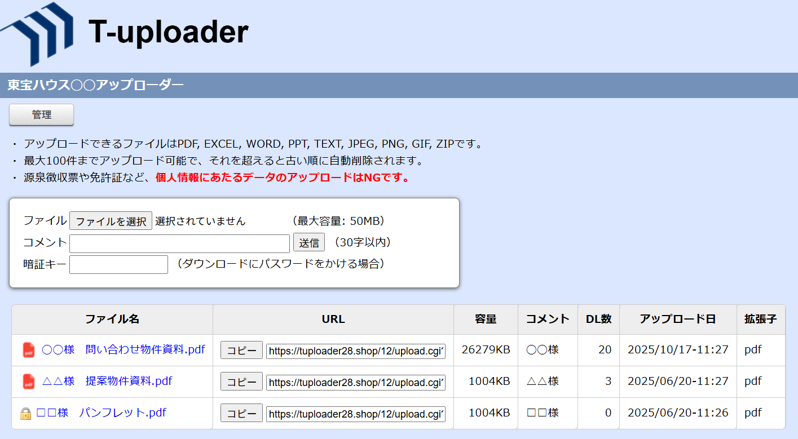
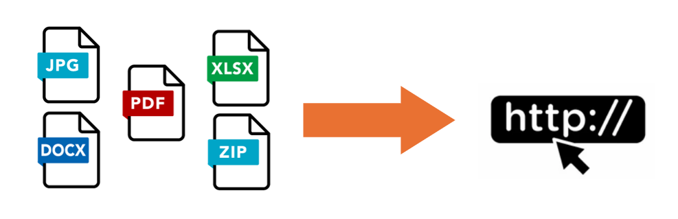
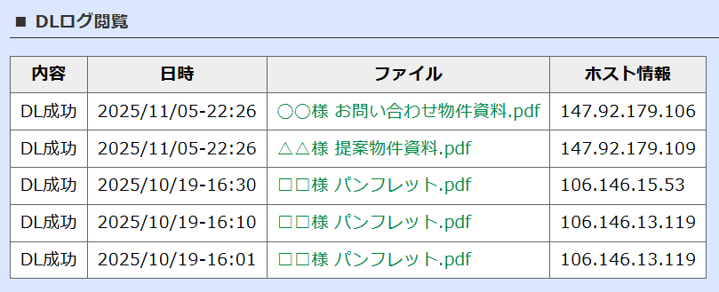
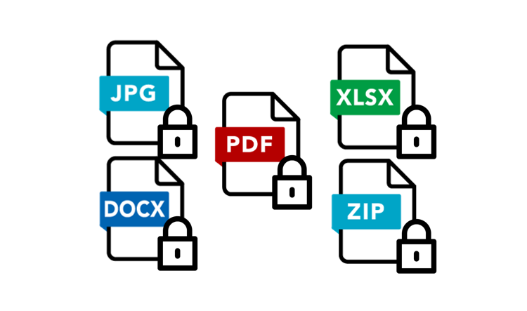
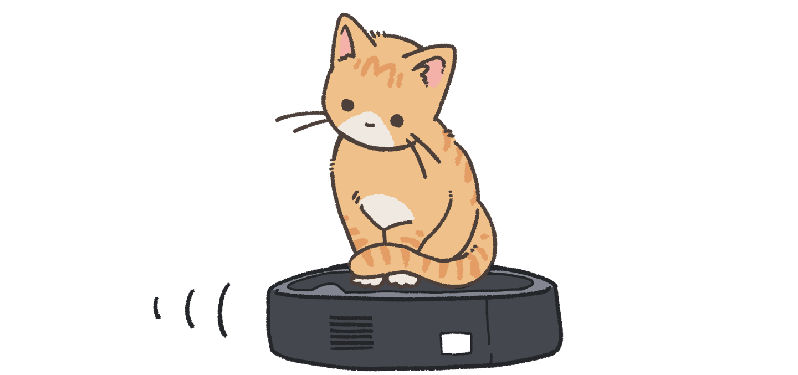
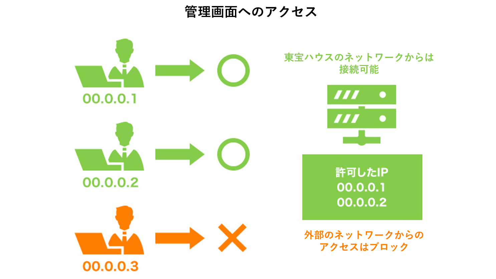

東宝アップローダー

導入効果
📁 効率化：大きなPDFファイルもスムーズにURL化して送付可能
👁️ 可視化：顧客の閲覧日時や回数を把握し、追客のタイミングを最適化
🛡️ セキュリティ：パスワード付きURLで安全なファイル受け渡しを実現
開発の背景・概要
従来のメール添付によるファイル送付は、セキュリティ上の不安や容量制限、また相手が実際に資料を確認したかどうかが分からないといった課題がありました。
東宝アップローダーは、これらの課題を解決するために開発されたデータURL化ブラウザソフトです。
既存のソフトをベースに、セキュリティ面の大幅な強化とログ管理機能の追加を行い、安全かつ戦略的な営業活動をサポートします。
主な機能
ファイルのURL化・簡単共有
PDF、Excel、Word、画像、ZIPなど、多彩な形式のファイルをアップロードして即座にURL化します。生成されたURLを送るだけで、相手はブラウザから簡単に資料を閲覧・保存できます。

高機能な閲覧ログ管理
管理画面から、各ファイルが「いつ」「誰が（ホスト情報）」「何回」閲覧したかの詳細なログを確認可能です。資料への関心度を可視化することで、より確度の高い営業アプローチを可能にします。

ダウンロード暗証キー設定
ファイルごとに任意の暗証キー（パスワード）を設定可能です。第三者による資料の誤閲覧を防ぎ、機密性の高い情報も安心して共有できる環境を提供します。

自動クリーンアップ機能
サーバーの容量を圧迫しないよう、記録数が一定数を超えると古い順に自動で削除される仕組みを搭載しています。運用管理の手間をかけずに、常に最適な状態を維持します。

IP/ホストによるアクセス制限
社内ネットワーク（特定のIPアドレス）のみからの操作を許可するなど、強力なアクセス制限機能を備えています。外部からの不正なアップロードや管理画面への侵入を徹底的に防ぎます。
